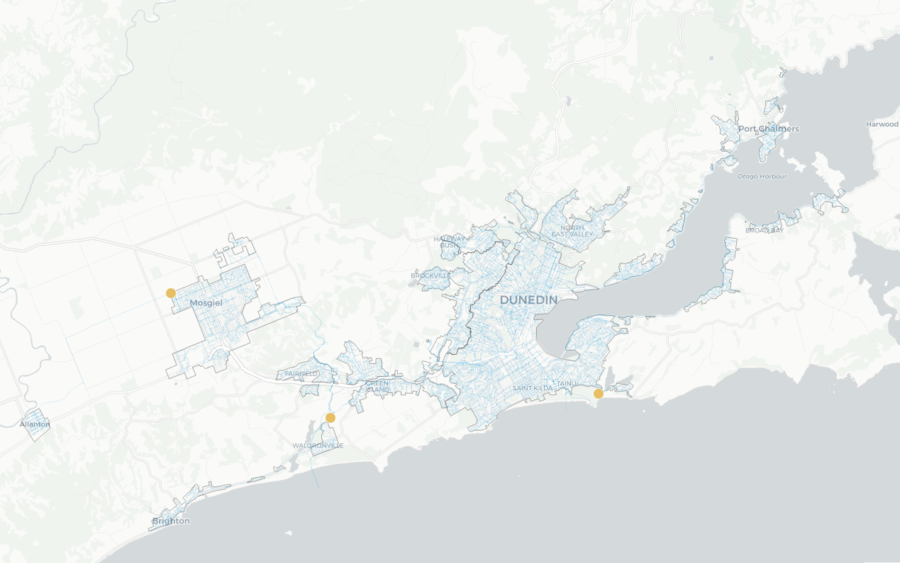

# Wastewater Data
waste.data = read_csv('../data/ww_data_all.csv')
waste.data.dunedin = waste.data %>%
filter(SampleLocation %in% c('OT_DunedinTahuna', 'OT_GreenIsland', 'OT_Mosgiel'))
# Flow Data
flow.dunedin = read_csv('dunedin_flow_data.csv')
# Manipulate into something useful.
flow.dunedin.tidy = flow.dunedin %>%
pivot_longer(cols = -c(1, 18), names_to = 'start_date', values_to = 'daily_flow_m3') %>%
mutate(start_date = mdy(start_date) + Day - 1) %>%
select(-1) %>%
arrange(start_date) %>%
rename('date' = start_date, 'SampleLocation' = catchment)
# Rain data
rain.data = read_csv('dunedin_rain_data.csv', skip = 31)
rain.data.locations = read_csv('dunedin_rain_data.csv', skip = 1, n_max = 24) %>%
rename('Longitude' = `Longitude (dec.deg)`, 'Latitude' = `Latitude (dec.deg)`, 'Agent' = `Agent Number`)Dunedin Flows and Wastewater Concentration
Summary
The same Flow/Wastewater/Rain analysis of Dunedin’s catchment sites to estimate the effect of population variance in Dunedin on the concentration of COVID-19 genome copies in Wastewater.
Data in.
Using the data, I just operated in the spreadsheets quickly to get something that I can read and manipulate easily in R.
For the rain data, we need to figure out which rain catchments are relevant. To do this, we’ll use effectively the same crude analysis as how we mapped the catchments for the other regions, except I don’t have the same tools as Mackay. I’ll first produce both the plots of the rain catchments and include a picture of the rain boundaries and eyeball the relevant sites.

nz_region = map_data('nz') %>%
select(Longitude = long, Latitude = lat, group)
# Longitude and Latitude to Km
# https://www.sco.wisc.edu/2022/01/21/how-big-is-a-degree/#:~:text=Therefore%20we%20can%20easily%20compute,further%20subdivisions%20of%20a%20degree.
longlat_ratio_km = c(78.6, 111.1)
(dunedin_map <- rain.data.locations %>%
ggplot(aes(x = Longitude, y = Latitude)) +
geom_text(aes(y = Latitude + 0.01, label = Agent), size = 3, check_overlap = TRUE) +
theme_bw() +
geom_point(col = 'blue', alpha = 0.5) +
geom_polygon(data = nz_region, aes(group = group), alpha = 0.2, col = 'black'))
# Too big to notice. Restrict to appropriate areas.
restriction = c(-45.963329, 170.804988,
-45.730863, 170.206128) %>% matrix(ncol = 2)
dunedin_map +
coord_cartesian(xlim = rev(restriction[2,]), ylim = restriction[1,])
Without computing 5km distances (the threshold used last time), it is fairly obvious that the rain catchments that would be relevant to the locations are simply:
tibble(
Catchment = flow.dunedin.tidy$SampleLocation %>% unique(),
`Rain Catchment Agent` = c(15752, 22692, 5361)
) %>% knitr::kable()| Catchment | Rain Catchment Agent |
|---|---|
| OT_DunedinTahuna | 15752 |
| OT_GreenIsland | 22692 |
| OT_Mosgiel | 5361 |
We could average over those which are relevant for potentially more accurate representations, but for now lets assume these locations give the best measurements.
rain.data.tidy = rain.data %>%
filter(Station %in% c(15752, 22692, 5361)) %>%
mutate(SampleLocation = case_when(Station == 15752 ~ 'OT_DunedinTahuna',
Station == 22692 ~ 'OT_GreenIsland',
TRUE ~ 'OT_Mosgiel')) %>%
mutate(`Date(NZST)` = ymd(paste0(str_sub(`Date(NZST)`, 1, 4), str_sub(`Date(NZST)`, 5, 6), str_sub(`Date(NZST)`, 7, 8))))
(rain.data.tidy2 = rain.data.tidy %>%
select(SampleLocation, Station, date = `Date(NZST)`, avg_rain = `Amount(mm)`) %>%
group_by(SampleLocation) %>%
mutate(
avg_rain.lag1 = lag(avg_rain),
avg_rain.lag2 = lag(avg_rain, 2),
avg_rain.lag3 = lag(avg_rain, 3),
avg_rain.lag4 = lag(avg_rain, 4),
avg_rain.lag5 = lag(avg_rain, 5),
avg_rain.lag6 = lag(avg_rain, 6),
avg_rain.lag7 = lag(avg_rain, 7),
))# A tibble: 1,588 × 11
# Groups: SampleLocation [3]
SampleLo…¹ Station date avg_r…² avg_r…³ avg_r…⁴ avg_r…⁵ avg_r…⁶ avg_r…⁷
<chr> <chr> <date> <dbl> <dbl> <dbl> <dbl> <dbl> <dbl>
1 OT_Dunedi… 15752 2021-07-01 0 NA NA NA NA NA
2 OT_GreenI… 22692 2021-07-01 0.4 NA NA NA NA NA
3 OT_Mosgiel 5361 2021-07-01 0 NA NA NA NA NA
4 OT_Dunedi… 15752 2021-07-02 0 0 NA NA NA NA
5 OT_GreenI… 22692 2021-07-02 0.1 0.4 NA NA NA NA
6 OT_Mosgiel 5361 2021-07-02 0 0 NA NA NA NA
7 OT_Dunedi… 15752 2021-07-03 0 0 0 NA NA NA
8 OT_GreenI… 22692 2021-07-03 0 0.1 0.4 NA NA NA
9 OT_Mosgiel 5361 2021-07-03 0 0 0 NA NA NA
10 OT_Dunedi… 15752 2021-07-04 0 0 0 0 NA NA
# … with 1,578 more rows, 2 more variables: avg_rain.lag6 <dbl>,
# avg_rain.lag7 <dbl>, and abbreviated variable names ¹SampleLocation,
# ²avg_rain, ³avg_rain.lag1, ⁴avg_rain.lag2, ⁵avg_rain.lag3, ⁶avg_rain.lag4,
# ⁷avg_rain.lag5Modelling
Now for this stage, we’ll investigate the effect of Rain on the observed concentration of COVID-19 Genome Copies, then investigate the effect of flow, and then try see if we can estimate an effect of population variance by citing a source on population variance in Dunedin.
First, lets prepare the data for modelling and store it in a model.data list of data.frames.
model_data = waste.data.dunedin %>%
select(SampleLocation, Date = Collected, sars_per_person = copies_per_day_per_person) %>%
left_join(rain.data.tidy2 %>%
rename('Date' = date),
by = c('SampleLocation', 'Date')) %>%
left_join(flow.dunedin.tidy %>%
rename('Date' = date, 'daily_flow_rate_m3' = daily_flow_m3),
by = c('SampleLocation', 'Date')) %>%
group_by(SampleLocation) %>%
group_split()
names(model_data) = unique(waste.data.dunedin$SampleLocation)
model_data[[1]]# A tibble: 101 × 13
SampleLo…¹ Date sars_…² Station avg_r…³ avg_r…⁴ avg_r…⁵ avg_r…⁶ avg_r…⁷
<chr> <date> <dbl> <chr> <dbl> <dbl> <dbl> <dbl> <dbl>
1 OT_Dunedi… 2021-12-29 0 15752 0 12.8 2.4 0 0
2 OT_Dunedi… 2022-01-05 0 15752 0 0 0 0 0
3 OT_Dunedi… 2022-01-10 0 15752 2.8 0 0.8 0.2 1
4 OT_Dunedi… 2022-01-13 0 15752 0.4 0.8 0 2.8 0
5 OT_Dunedi… 2022-01-17 0 15752 0 0 0 0 0.4
6 OT_Dunedi… 2022-01-24 0 15752 0 0 0 0.8 12.6
7 OT_Dunedi… 2022-01-27 0 15752 1.8 0 0 0 0
8 OT_Dunedi… 2022-01-31 0 15752 0.2 0.4 0 0.6 1.8
9 OT_Dunedi… 2022-02-03 0 15752 1.2 1 0 0.2 0.4
10 OT_Dunedi… 2022-02-08 0 15752 0 0.2 0 14.6 8.6
# … with 91 more rows, 4 more variables: avg_rain.lag5 <dbl>,
# avg_rain.lag6 <dbl>, avg_rain.lag7 <dbl>, daily_flow_rate_m3 <dbl>, and
# abbreviated variable names ¹SampleLocation, ²sars_per_person, ³avg_rain,
# ⁴avg_rain.lag1, ⁵avg_rain.lag2, ⁶avg_rain.lag3, ⁷avg_rain.lag4source('../produce_modelling_summaries.R')Rain
print_rainsummary.gam(produce_rainsummary.gam(model_data$OT_DunedinTahuna))
print_rainsummary.gam(produce_rainsummary.gam(model_data$OT_GreenIsland))
print_rainsummary.gam(produce_rainsummary.gam(model_data$OT_Mosgiel))
Table: OT_DunedinTahuna
| Concentration Loss %| 97.5%| 2.5%| P-Value|
|--------------------:|------:|-----:|---------:|
| 22.251| 33.001| 9.775| 0.0007186|


Table: OT_GreenIsland
| Concentration Loss %| 97.5%| 2.5%| P-Value|
|--------------------:|------:|------:|---------:|
| 10.941| 26.718| -8.231| 0.2345925|


Table: OT_Mosgiel
| Concentration Loss %| 97.5%| 2.5%| P-Value|
|--------------------:|------:|------:|---------:|
| 9.352| 20.473| -3.326| 0.1335762|


Flow
print_flowsummary.gam(produce_flowsummary.gam(model_data$OT_DunedinTahuna))
print_flowsummary.gam(produce_flowsummary.gam(model_data$OT_GreenIsland))
print_flowsummary.gam(produce_flowsummary.gam(model_data$OT_Mosgiel))
Table: OT_DunedinTahuna
|Quantile | Flow Rate| % Concentration Loss Explained| 97.5%| 2.5%| P-Value|
|:---------|---------:|------------------------------:|--------:|--------:|--------:|
|Lower 25% | 27152.00| 51.14377| 72.87795| 11.99298| 0.017329|
|Median | 28773.00| 53.18897| 74.91054| 12.66165| 0.017329|
|Upper 75% | 31726.25| 56.69751| 78.23015| 13.86687| 0.017329|


Table: OT_GreenIsland
|Quantile | Flow Rate| % Concentration Loss Explained| 97.5%| 2.5%| P-Value|
|:---------|---------:|------------------------------:|--------:|---------:|---------:|
|Lower 25% | 7875.75| 16.59993| 37.41551| -11.13891| 0.2099924|
|Median | 8981.50| 18.69856| 41.40093| -12.79912| 0.2099924|
|Upper 75% | 11273.50| 22.88194| 48.87204| -16.31981| 0.2099924|


Table: OT_Mosgiel
|Quantile | Flow Rate| % Concentration Loss Explained| 97.5%| 2.5%| P-Value|
|:---------|---------:|------------------------------:|--------:|---------:|---------:|
|Lower 25% | 4083.0| 45.16122| 74.77216| -19.20528| 0.1259502|
|Median | 4345.0| 47.23506| 76.90598| -20.55668| 0.1259502|
|Upper 75% | 4641.5| 49.48755| 79.10390| -22.10451| 0.1259502|


Rain or Flow?
print_flowrainsummary.gam(produce_flowrainsummary.gam(model_data$OT_DunedinTahuna))
print_flowrainsummary.gam(produce_flowrainsummary.gam(model_data$OT_GreenIsland))
print_flowrainsummary.gam(produce_flowrainsummary.gam(model_data$OT_Mosgiel))
Table: OT_DunedinTahuna
|Quantile | Flow Rate| % Concentration Loss Explained| 97.5%| 2.5%| P-Value|
|:---------|---------:|------------------------------:|--------:|--------:|---------:|
|Lower 25% | 27152.00| 80.43750| 96.01318| 4.010857| 0.0441606|
|Median | 28773.00| 82.25313| 96.71086| 4.245155| 0.0441606|
|Upper 75% | 31726.25| 85.13887| 97.68326| 4.670546| 0.0441606|

Table: OT_GreenIsland
|Quantile | Flow Rate| % Concentration Loss Explained| 97.5%| 2.5%| P-Value|
|:---------|---------:|------------------------------:|--------:|---------:|---------:|
|Lower 25% | 7875.75| 5.335601| 32.63044| -33.01777| 0.7481429|
|Median | 8981.50| 6.061568| 36.26469| -38.45432| 0.7481429|
|Upper 75% | 11273.50| 7.548671| 43.18544| -50.44116| 0.7481429|

Table: OT_Mosgiel
|Quantile | Flow Rate| % Concentration Loss Explained| 97.5%| 2.5%| P-Value|
|:---------|---------:|------------------------------:|--------:|---------:|---------:|
|Lower 25% | 4083.0| 33.29377| 85.66411| -210.3904| 0.6001711|
|Median | 4345.0| 35.00448| 87.34408| -233.7899| 0.6001711|
|Upper 75% | 4641.5| 36.88760| 89.00906| -262.4054| 0.6001711|

Tahuna looks like the only location that seems to be showing any significance in a correlation between Rain/Flow on the concentration of genome copies. Perhaps including some information about population variance would provide some more insight?